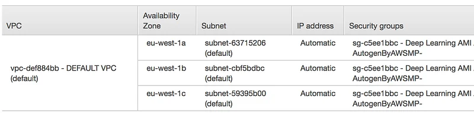
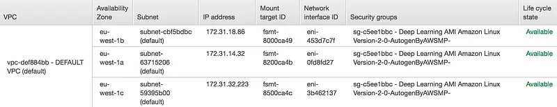
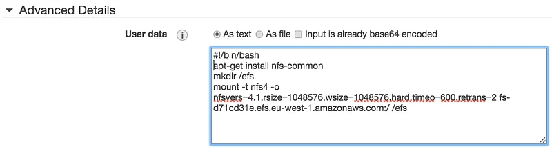

Training MXNet — part 5: distributed training, EFS edition
In part 4, we learned how to speed up training by using multiple GPU instances. We saw that the job launcher, a Python script named launch.py, used rsync to copy the data set to each one of these instances. For a small data set like CIFAR-10, that’s not really a problem. However, it would be slow and wasteful to copy a much larger data set.
In this article, I will show you how to share the data set across all instances with Amazon EFS, a managed service fully compatible with NFS v4.1.
The song remains the same
Everything we did in part 4 still stands. In particular, we do need password-less ssh between all instances, because the launcher uses ssh to start the training script.
So, if you haven’t done so already, please read part 4 and come back here when you reach the “Launching distributed training” section :)
Creating an EFS file system
This is very simple. Go the EFS console and click on “Create file system”. Select the VPC in which your instances are running. Then, select all available AZs and make sure you use the Security Group attached to your instances (not the default Security Group selected by the console).

Click “Next”, select the “General purpose” performance mode and create the file system. After a few minutes, the file system will be ready for mounting. Don’t try to mount it until it’s available, you’ll get a “Name or service not known” error. I know, I tried :)

Amazon EFS is NFS-compatible, so mounting the file system is done the way you’d expect it. Mount instructions are available in the console.
Obviously, we need to do this on all instances. If your instances are already up, just run the commands above on each of them.
If they’re not up yet, then you can mount the file system automatically at instance launch thanks to User Data (just copy the commands in the “Advanced Details” section of the EC2 console).

Sharing the data set
Now that the file system has been mounted on all instances, it’s time to share the data set. Actually, we’ll share the full MXNet source tree, in order to include all necessary scripts.
You should now see the mxnet directory on all instances. We’re ready to launch training.
Launching distributed training
The command is identical to the one we used in part 4, minus the “ — sync-dst-dir /tmp/mxnet” parameter.
That’s it! Now you know how to do distributed training using shared storage. As a bonus, we also shared the sources and that will come in handy next time we need to build and install MXNet :)
Thanks for reading.